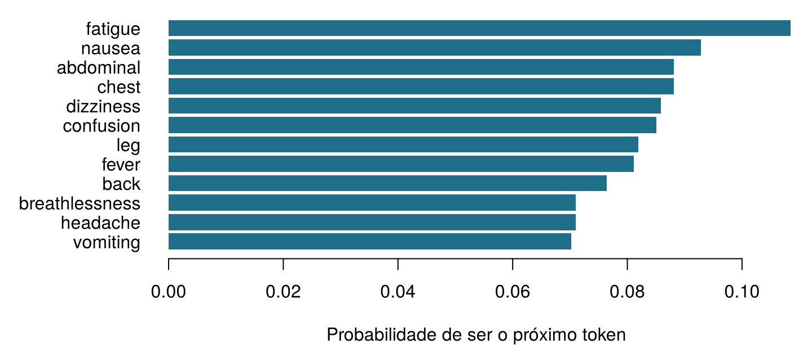
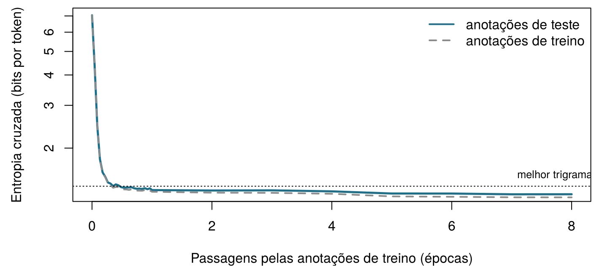
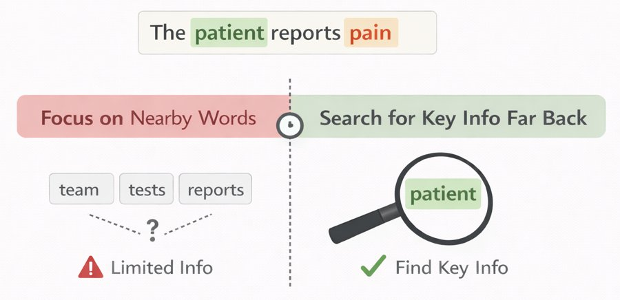

| note_id | set | text |
|---|---|---|
| N0001 | train | aki confirmed . |
| N0002 | train | patient reports vomiting . patient denies leg pain since yesterday . |
| N0004 | train | patient denies nausea since last night . |
| N0009 | train | patient reports breathlessness since this morning . patient reports headache since last night . |
| N0011 | train | started gentamicin today , patient complains of nausea , check gentamicin level tomorrow . |
| N0012 | train | lipase rising , pancreas function worsening . |
16 Prevendo a próxima palavra: modelos de linguagem e embeddings
Antes de qualquer fórmula, conte. Aqui estão seis anotações curtas da UTI Ala 7 (em inglês: patient = paciente, reports = relata, denies = nega, pain = dor, nausea = náusea, fever = febre, since yesterday = desde ontem, no evidence of = sem sinais de).
patient reports pain . · patient reports nausea . · patient denies pain . · patient reports pain since yesterday . · patient reports fever . · no evidence of pain .
| Pergunta | Sua resposta |
|---|---|
| Quantas vezes aparece a palavra reports? | |
| Em quantas dessas vezes ela é seguida por pain? | |
| Então, a partir dessas anotações, qual é a probabilidade de que a palavra depois de reports seja pain? (um número entre 0 e 1) | |
| Um sistema que sempre escreve a próxima palavra mais frequente digita patient. O que ele escreve em seguida? |
Como usar este capítulo
Começando por aqui?
Este capítulo toma emprestadas algumas ideias de capítulos anteriores.
- Tokens e vocabulário (Capítulo 15). Um texto é cortado em tokens (palavras, pedaços de palavras ou caracteres, dependendo do tokenizador); o conjunto de tokens distintos é o vocabulário \(\mathcal{V}\), de tamanho \(|\mathcal{V}|\), e o token na posição \(t\) é escrito \(w_t\). Aqui as anotações já são palavras em minúsculas e sinais de pontuação separados por espaços, de modo que um token é simplesmente uma palavra ou um sinal de pontuação.
- Probabilidade, probabilidade condicional e máxima verossimilhança (Capítulo 2). \(P(A \mid B)\) é a probabilidade de \(A\) quando \(B\) é conhecido; a estimativa de máxima verossimilhança de uma proporção é o número de sucessos dividido pelo número de tentativas, \(k/n\).
- Entropia (Capítulo 2): a surpresa média de um resultado, \(-\log_2 P\), medida em bits. O Capítulo 2 prometeu que ela voltaria como a perda que treina os modelos de linguagem; é o que acontece na Seção 16.5.
- Softmax e descida do gradiente (Capítulo 7): a softmax transforma uma lista de escores em probabilidades que somam um; a descida do gradiente ajusta os pesos de uma rede para reduzir uma perda.
- Similaridade do cosseno (Capítulo 10, Capítulo 15): o cosseno do ângulo entre dois vetores, 1 quando apontam na mesma direção e 0 quando são perpendiculares.
- Dados de treino e de teste (Seção 1.8): um modelo é julgado com dados que ele não viu enquanto estava sendo construído.
| Exemplo | Quem ou o quê | Desfecho | Rostos que você vai conhecer |
|---|---|---|---|
| 1 UTI Ala 7 | 1.250 pacientes de UTI em 4 hospitais | variação da creatinina em 48 h (lesão renal aguda se ≥ 0,3 mg/dL) | Aoife (71 anos, sepse, risco limítrofe), Tomás (54 anos, risco baixo), Priya (38 anos, risco alto); a Dra. Emma Walsh; Seán, o farmacêutico |
| 2 Ensaio ONCO-1 | 1.000 pacientes randomizados para quimioterapia ou não | redução do tumor (%) | pacientes #0042 e #0917 |
| 3 HomeBeat | 500 pessoas que usam um relógio inteligente em casa | escore de estresse, evento de deterioração | Lena |
| 4 CellWorks | 420 lotes de produção de uma terapia celular | escore de potência | lote CW-118 |
Os quatro conjuntos de dados são simulados e podem ser baixados no apêndice de dados. A apresentação completa está na Seção 1.1.
Este capítulo explica como uma máquina escreve texto, um token de cada vez. Ele tem dez seções e um Lab, oito verificações rápidas, quatro widgets “Experimente”, um desafio e três missões de programação em R e Python. Reserve cerca de 100 minutos. Os modelos são pequenos o bastante para serem compreendidos por completo e, com exceção de dois que foram treinados previamente, para rodar no seu navegador.
Notação em resumo (apenas para consulta)
| Símbolo | Significado | Seção |
|---|---|---|
| \(\mathcal{V}\), \(\lvert\mathcal{V}\rvert\) | vocabulário e seu tamanho | Seção 16.2 |
| \(w_t\), \(w_{1:N}\) | token na posição \(t\); uma sequência de \(N\) tokens | Seção 16.2 |
| \(w_{<t}\) | todos os tokens antes da posição \(t\) (o contexto) | Seção 16.2 |
| \(P_\theta(w_t \mid w_{<t})\) | probabilidade do próximo token dada por um modelo com parâmetros \(\theta\) | Seção 16.2 |
| \(c(\cdot)\) | número de vezes que um token ou uma sequência ocorre nas anotações de treino | Seção 16.4 |
| \(\delta\) | pseudocontagem somada na suavização add-\(\delta\) | Seção 16.4 |
| \(H(P)\), \(H(P, Q)\) | entropia e entropia cruzada, em bits | Seção 16.5 |
| \(D_{\text{KL}}(P \,\Vert\, Q)\) | divergência de Kullback–Leibler | Seção 16.5 |
| PPL | perplexidade | Seção 16.5 |
| \(\mathbf{z}\), \(z_j\) | logits (escores antes da softmax) | Seção 16.6 |
| \(\tau\) | temperatura de amostragem | Seção 16.6 |
| \(\mathbf{e}_w\), \(\mathbf{E}\), \(d\) | embedding do token \(w\); matriz de embeddings; dimensão do embedding | Seção 16.7 |
| \(\mathbf{h}_t\) | estado oculto depois de ler o token \(t\) | Seção 16.9 |
A lista completa está na página de notação.
16.1 Os dados: oito mil anotações curtas
Os modelos de linguagem aprendem com textos, então precisamos de um corpus. Anotações clínicas reais são informações de saúde protegidas e não podem ser distribuídas com um livro; por isso, este capítulo usa 8 000 anotações simuladas da UTI Ala 7, geradas por uma pequena gramática com uma semente aleatória fixa (sim_ch16_ward7_notes.py). Elas não descrevem nenhuma pessoa real e, como no hospital da Ala 7, estão escritas em inglês. Cada anotação tem uma ou duas orações curtas: um sintoma, um medicamento iniciado, uma tendência laboratorial, uma negação, um plano, um comentário de um membro da equipe. Dessas anotações, 7 147 formam o conjunto de treino; as 853 restantes, o conjunto de teste.
As anotações de treino contêm 65 431 tokens tirados de um vocabulário de apenas 129 palavras e sinais de pontuação distintos. Isso é minúsculo perto das centenas de bilhões de tokens usados para treinar os modelos de linguagem modernos (Brown et al. 2020), e as anotações são muito mais repetitivas do que a escrita clínica real. É de propósito: como a gramática que gerou as anotações é conhecida, podemos verificar o que cada modelo aprendeu, como fizemos com os conjuntos de dados simulados dos capítulos anteriores. A gramática também esconde três armadilhas que dispararemos mais adiante: medicamentos da mesma classe aparecem em frases semelhantes; algumas anotações citam um medicamento e pedem, uma ou duas orações depois, que se dose o nível daquele mesmo medicamento; e o pronome que segue cada função da equipe é deliberadamente desequilibrado, como acontece em muitos textos reais.
16.2 Um modelo de linguagem atribui probabilidades ao próximo token
O preenchimento automático na tela de Seán faz uma única coisa: dado o texto até ali, atribui a cada token do seu vocabulário uma probabilidade de vir em seguida e mostra o mais provável. Depois de “patient reports” (“paciente relata”), as anotações da UTI Ala 7 continuam com um sintoma ou uma região do corpo. Contar o que vem depois dessas duas palavras nas anotações de treino dá as probabilidades da Figura 16.1.

Definição 16.1 (Modelo de linguagem) Um modelo de linguagem é uma distribuição de probabilidade sobre sequências de tokens. Na prática, ele é especificado pelas suas probabilidades do próximo token \(P_\theta(w_t \mid w_{<t})\): para cada posição \(t\) e cada contexto possível \(w_{<t} = (w_1, \dots, w_{t-1})\), uma probabilidade para cada token do vocabulário, somando um. Os parâmetros \(\theta\) são estimados a partir de um corpus de treino (Jurafsky e Martin 2026, cap. 3).
Duas operações decorrem dessa definição. Pontuar: o modelo consegue dizer quão provável é um texto inteiro, o que nos permite comparar modelos e identificar textos incomuns. Gerar: o modelo consegue escrever, escolhendo um próximo token a partir da sua distribuição, acrescentando-o ao texto e repetindo. Um chatbot que responde a uma pergunta faz exatamente isso, token após token; o restante da Parte V explica quanta maquinaria pode caber dentro de \(P_\theta\), mas o laço externo nunca muda.
A ideia é mais antiga que os computadores. Em 1913, Andrei Markov contou à mão com que frequência uma vogal segue uma vogal ou uma consoante em 20.000 letras de Eugênio Onêguin, de Púchkin, para mostrar que as letras de um texto não são sorteios independentes (Markov 2006). Em 1951, Claude Shannon pediu a pessoas que adivinhassem a próxima letra de um texto em inglês e usou a taxa de acerto delas para estimar quão previsível é o inglês (Shannon 1951). Um modelo de linguagem joga o jogo de adivinhação de Shannon.
O preenchimento automático sugere gentamicin. O que, exatamente, o modelo calculou?
16.3 A regra da cadeia: a probabilidade de uma anotação inteira
Uma anotação é uma sequência de tokens \(w_1, w_2, \dots, w_N\). Sua probabilidade pode sempre ser escrita como um produto de probabilidades do próximo token. Com dois tokens, a definição de probabilidade condicional do Capítulo 2 dá \(P(w_1, w_2) = P(w_1)\,P(w_2 \mid w_1)\); aplicá-la repetidamente dá a regra geral.
Definição 16.2 (Regra da cadeia da probabilidade) Para qualquer sequência de tokens, \[ P(w_1, w_2, \dots, w_N) = P(w_1)\, P(w_2 \mid w_1)\, P(w_3 \mid w_1, w_2) \cdots P(w_N \mid w_1, \dots, w_{N-1}) = \prod_{t=1}^{N} P(w_t \mid w_{<t}) . \qquad(16.1)\] A regra é exata: não envolve nenhum pressuposto. Ela transforma a tarefa impossível de atribuir uma probabilidade a cada texto possível em uma sequência de predições do próximo token (Jurafsky e Martin 2026, cap. 3).
Para marcar onde uma anotação começa e termina, acrescentamos dois tokens especiais, <s> (início) e </s> (fim): a primeira predição é \(P(w_1 \mid \texttt{<s>})\), e o modelo também precisa prever </s>, para aprender quando uma anotação está terminada. A Tabela 16.2 aplica a Equação 16.1 à anotação “patient reports chest pain .” (“paciente relata dor torácica .”), com cada fator estimado contando nas anotações de treino quantas vezes a palavra segue a anterior (o método da próxima seção).
| Passo | Token anterior | Próximo token | Probabilidade | Surpresa (bits) |
|---|---|---|---|---|
| 1 | <s> |
patient |
0.207 | 2.28 |
| 2 | patient |
reports |
0.493 | 1.02 |
| 3 | reports |
chest |
0.088 | 3.50 |
| 4 | chest |
pain |
1.000 | 0.00 |
| 5 | pain |
. |
0.595 | 0.75 |
| 6 | . |
</s> |
0.729 | 0.46 |
Multiplicar os seis fatores dá \(P(\text{anotação}) \approx\) 0,0039. Parece minúsculo, mas é a probabilidade desta sequência exata entre todas as anotações que o modelo poderia escrever. Textos longos têm probabilidades astronomicamente pequenas, tão pequenas que os computadores as arredondam para zero. A solução é somar logaritmos em vez de multiplicar probabilidades: a log-probabilidade da anotação é a soma das log-probabilidades de cada token, e o negativo dessa soma, em base 2, é a surpresa total, aqui 8,01 bits. Todo modelo de linguagem, desta tabela ao maior chatbot, é treinado e avaliado com somas como esta.
Uma das seis probabilidades da Tabela 16.2 é substituída por 0, porque um modelo nunca viu aquele par de palavras. O que acontece com a probabilidade da anotação inteira e com a sua surpresa total?
16.4 Modelos de n-gramas: prever contando
A regra da cadeia pede \(P(w_t \mid w_{<t})\) dado o contexto inteiro, mas a maioria dos contextos longos ocorre uma única vez, ou nunca, em qualquer corpus. A solução mais antiga é esquecer tudo, menos os últimos poucos tokens.
Definição 16.3 (Modelo de n-gramas) Um modelo de n-gramas supõe que o próximo token depende apenas dos \(n-1\) tokens anteriores (um pressuposto de Markov): \[ P(w_t \mid w_{<t}) \approx P(w_t \mid w_{t-n+1}, \dots, w_{t-1}) . \] Um modelo de bigramas (\(n = 2\)) olha para um token anterior; um modelo de trigramas (\(n = 3\)), para dois. As probabilidades são estimadas por contagem, que é a estimativa de máxima verossimilhança: \[ \hat P(w_t \mid w_{t-1}) = \frac{c(w_{t-1}\, w_t)}{c(w_{t-1})} , \qquad(16.2)\] em que \(c(\cdot)\) conta as ocorrências no corpus de treino (Jurafsky e Martin 2026, cap. 3).
(A letra \(n\) aqui é a ordem do modelo, um nome consagrado; não tem nada a ver com o número de instâncias \(n\) dos capítulos anteriores.) A Equação 16.2 é o \(k/n\) do Capítulo 2 com roupa nova: entre as \(c(w_{t-1})\) vezes em que o token anterior ocorreu, a proporção seguida por \(w_t\). Nas anotações de treino, reports ocorre 1 282 vezes e é seguido por chest (tórax) em 8,8 % delas, então \(\hat P(\text{chest} \mid \text{reports}) =\) 0,088. Você fez o mesmo cálculo com seis anotações na porta de entrada deste capítulo.
Um escritor de bigramas. O widget conta cada par de tokens consecutivos nas 7 147 anotações de treino e depois escreve anotações novas sorteando repetidamente o próximo token em proporção a quantas vezes ele seguiu o token atual. Cada linha da tabela é um fator da regra da cadeia. Escolha uma palavra abaixo para ver a distribuição da qual ela sorteia e mova o controle de suavização (explicado depois do widget) para ver o que acontece com as palavras que nunca vieram depois dela. Gere três anotações.
O escritor de bigramas produz anotações localmente sensatas que às vezes se perdem: como ele só lembra de um token, pode começar com um medicamento e terminar com um sintoma, ou repetir uma oração. Sua outra fraqueza está na tabela: um par que ele nunca viu recebe probabilidade zero e, como mostrou a verificação rápida, um único zero torna impossível uma anotação inteira.
16.4.1 Quão esparsas são as contagens?
Contextos mais longos deixam as predições mais precisas, mas as contagens mais ralas. Com 130 tokens possíveis em cada posição do contexto (as palavras mais <s>), existem 130 contextos possíveis de um token, 16 900 contextos de dois tokens, e assim por diante. A Tabela 16.3 mostra quão poucos deles chegam a ocorrer nas anotações de treino.
| Modelo | Comprimento do contexto | Contextos vistos | Contextos possíveis | Fração vista |
|---|---|---|---|---|
| bigrama | 1 | 130 | 130 | 1 |
| trigrama | 2 | 398 | 16 900 | 0.024 |
| 4-grama | 3 | 1 429 | 2 197 000 | 0.00065 |
| 5-grama | 4 | 3 338 | 285 610 000 | 1.2e-05 |
| 6-grama | 5 | 6 033 | 37 129 300 000 | 1.6e-07 |
Mesmo neste corpus pequeno e repetitivo, um modelo de 4-gramas viu apenas uma fração minúscula dos contextos que pode encontrar. Com um vocabulário real de dezenas de milhares de tokens, o problema é avassalador: a maioria das frases perfeitamente comuns contém sequências de palavras que nenhum corpus jamais registrou.
16.4.2 Suavização: nunca diga nunca
Veja a palavra meropenem. Nas anotações da UTI Ala 7, ele é sempre o antibiótico para o qual alguém troca, nunca um que é iniciado (started), então \(\hat P(\text{meropenem} \mid \text{started}) =\) 0. Uma anotação dizendo “started meropenem for sepsis” (“iniciado meropenem para sepse”) seria declarada impossível, embora qualquer farmacêutico saiba que é algo comum. A suavização desloca um pouco de probabilidade do que foi visto para o que não foi.
Definição 16.4 (Suavização) A suavização (smoothing) ajusta as probabilidades baseadas em contagens para que nenhum token possível tenha probabilidade zero. A versão mais simples, a suavização add-\(\delta\), soma uma pseudocontagem \(\delta > 0\) a cada contagem: \[ \hat P_\delta(w_t \mid w_{t-1}) = \frac{c(w_{t-1}\, w_t) + \delta}{c(w_{t-1}) + \delta\, |\mathcal{V}|} , \qquad(16.3)\] em que \(|\mathcal{V}|\) é o número de tokens que podem vir em seguida. Com \(\delta = 1\), ela é chamada de suavização de Laplace ou add-one (soma de um) (Jurafsky e Martin 2026, cap. 3).
started ocorre 1 463 vezes nas anotações de treino e há 130 próximos tokens possíveis (as 129 palavras e sinais de pontuação, mais </s>); assim, com a suavização add-one, \(\hat P_1(\text{meropenem} \mid \text{started}) = 1 / (1463 + 130) \approx\) 0,00063: pequena, mas não mais zero. A mesma quantidade vai para “started started” e “started ,”, que não são nada comuns: a suavização não consegue distinguir lacunas plausíveis de lacunas absurdas, e nas próximas seções os embeddings conseguirão. \(\delta\) é um hiperparâmetro, a ser escolhido com dados de validação (Capítulo 3); você pode observar seu efeito no widget acima. Existem esquemas melhores, como o backoff (recuo) para contextos mais curtos e a suavização de Kneser–Ney, que foram o estado da arte durante décadas (Katz 1987; Kneser e Ney 1995; Chen e Goodman 1999).
Um modelo de trigramas treinado com as anotações da UTI Ala 7 é usado em cartas de alta da enfermaria de cardiologia. Qual afirmação é a mais precisa?
Conte o seu próprio bigrama. As anotações de treino já estão carregadas e cortadas em uma tabela de pares de tokens consecutivos, bigrams, com as colunas prev (anterior) e nxt (próximo) (<s> e </s> marcam o início e o fim de cada anotação). Usando a Equação 16.2, estime a probabilidade de que o token depois de denies (nega) seja fever (febre). Preencha a lacuna.
A lacuna é a palavra cuja probabilidade você quer, escrita como uma string entre aspas.
mean(after == "fever")A lacuna é a palavra cuja probabilidade você quer, escrita como uma string entre aspas.
(after == "fever").mean()16.5 Entropia cruzada e perplexidade: quão surpreso fica o modelo?
Agora temos vários modelos de linguagem (de bigramas ou de trigramas, com mais ou menos suavização) e precisamos de uma forma de compará-los. Como sempre, a comparação é feita com textos que os modelos não viram: as 853 anotações de teste. Um bom modelo é aquele que não se surpreende com elas, isto é, que deu probabilidade alta aos tokens que de fato vieram em seguida. O Capítulo 2 mediu a surpresa em bits; eis a versão geral.
Definição 16.5 (Entropia cruzada) Se os resultados seguem uma distribuição \(P\), mas nós os prevemos com um modelo \(Q\), a entropia cruzada (cross-entropy) é a surpresa média que experimentamos: \[ H(P, Q) = -\sum_{w} P(w) \log_2 Q(w) . \] Ela nunca é menor que a entropia \(H(P) = -\sum_w P(w) \log_2 P(w)\), e a diferença é a divergência de Kullback–Leibler, \(D_{\text{KL}}(P \,\Vert\, Q) = H(P, Q) - H(P) \ge 0\), que só é zero quando \(Q = P\) (Cover e Thomas 2006; Kullback e Leibler 1951). Para um modelo de linguagem aplicado a um texto de teste de \(N\) tokens, não conhecemos \(P\), mas o texto é uma amostra dela; por isso, a entropia cruzada é estimada pela surpresa média por token: \[ \hat H = -\frac{1}{N} \sum_{t=1}^{N} \log_2 P_\theta(w_t \mid w_{<t}) . \qquad(16.4)\]
Um pequeno exemplo torna a identidade concreta. Se a verdadeira distribuição do próximo token entre três palavras é \(P = (0{,}7;\ 0{,}2;\ 0{,}1)\) e um modelo prevê \(Q = (0{,}6;\ 0{,}3;\ 0{,}1)\), então \(H(P) =\) 1,157 bits, \(H(P, Q) =\) 1,195 bits e a divergência KL é a diferença, 0,039 bits: a surpresa extra causada por usar um modelo ligeiramente errado. Como \(H(P)\) não depende do modelo, minimizar a entropia cruzada é o mesmo que minimizar a divergência KL em relação à verdade, e também é o mesmo que maximizar a verossimilhança do texto de treino (a surpresa média é menos a log-verossimilhança dividida por \(N\)). Essa é a perda que treina todos os modelos de linguagem deste capítulo e dos dois seguintes, exatamente como treinou os classificadores do Capítulo 5, em que o “vocabulário” tinha só duas entradas, LRA ou não.
Definição 16.6 (Perplexidade) A perplexidade de um modelo em um texto de teste é dois elevado à sua entropia cruzada em bits: \[ \text{PPL} = 2^{\hat H} = \left( \prod_{t=1}^{N} P_\theta(w_t \mid w_{<t}) \right)^{-1/N} . \] Ela pode ser lida como o número efetivo de escolhas igualmente prováveis entre as quais o modelo hesita a cada passo: um modelo que distribuísse sua probabilidade igualmente entre 8 tokens teria perplexidade 8. Quanto menor, melhor (Jurafsky e Martin 2026, cap. 3).
(Com logaritmos naturais, como na maioria dos softwares, a mesma quantidade é \(e^{\hat H}\); o número não muda. O parâmetro de “perplexidade” do t-SNE no Capítulo 10 é a mesma ideia aplicada a uma distribuição sobre vizinhos (Maaten e Hinton 2008).) A Tabela 16.4 compara os modelos nas 8 639 predições necessárias para as anotações de teste.
| Modelo | Entropia cruzada (bits por token) | Perplexidade |
|---|---|---|
| Unigrama (sem contexto), add-0,01 | 5.887 | 59.20 |
| Bigrama, add-one (Laplace) | 1.956 | 3.88 |
| Bigrama, add-0,01 | 1.700 | 3.25 |
| Trigrama, add-one (Laplace) | 1.961 | 3.89 |
| Trigrama, add-0,01 | 1.394 | 2.63 |
| Neural, janela de 3 tokens | 1.292 | 2.45 |
| LSTM (anotação inteira) | 1.217 | 2.32 |
Leia de cima para baixo. Um modelo sem nenhum contexto (unigrama) hesita entre cerca de 59 tokens a cada passo. Usar um token anterior reduz isso para 3,2; usar dois, para 2,6. A suavização também importa, e não de um jeito óbvio: com a suavização add-one, o modelo de trigramas não é melhor que o de bigramas (3,89 contra 3,88), porque somar 1 a cada uma das 130 contagens possíveis afoga as poucas observações disponíveis para cada contexto de dois tokens. Um \(\delta\) pequeno funciona muito melhor aqui. (Escolhemos \(\delta\) de uma lista curta olhando para as anotações de teste, o que, como alertou o Capítulo 3, torna esses números de teste ligeiramente otimistas; um conjunto de validação seria o caminho honesto.) Repare também em quão baixos são todos os números: o inglês real tem perplexidades na casa das dezenas ou centenas com bons modelos (Jurafsky e Martin 2026, cap. 3; Radford et al. 2019), mas as anotações da UTI Ala 7 vêm de uma pequena gramática e são muito previsíveis. A perplexidade mede um modelo em um texto específico: números de corpora diferentes ou de tokenizadores diferentes não podem ser comparados.
O modelo A tem perplexidade 3,2 nas anotações de teste da UTI Ala 7; o modelo B tem perplexidade 45 em uma coleção de cartas de alta reais. Qual modelo é melhor?
Perplexidade à mão. Um modelo de bigramas com suavização add-0,01 atribuiu a cada um dos 10 tokens da anotação de teste “started gentamicin today , check gentamicin level tomorrow .” (“iniciada gentamicina hoje , dosar nível de gentamicina amanhã .”; seus nove tokens mais </s>) as probabilidades do vetor p. Calcule a perplexidade do modelo nesta anotação: dois elevado à surpresa média em bits.
Logaritmos na base 2 no R: log2().
2^(-mean(log2(p)))Logaritmos na base 2 no numpy: np.log2().
2 ** (-np.mean(np.log2(p)))16.6 Das probabilidades ao texto: softmax, temperatura e amostragem
Os modelos baseados em contagens produzem probabilidades diretamente. Os modelos de linguagem neurais, como os classificadores do Capítulo 7, produzem em vez disso um escore real para cada token do vocabulário, os logits \(\mathbf{z} = (z_1, \dots, z_{|\mathcal{V}|})\), e a softmax os transforma em probabilidades: \(P(w_j) = e^{z_j} / \sum_{k} e^{z_k}\). Com três palavras candidatas e logits \(\mathbf{z} = (2{,}5;\ 1{,}0;\ 0{,}3)\), as probabilidades são 0,750, 0,167 e 0,083 (Figura 16.2). Este é o passo que o Capítulo 5 prometeu: a softmax é a função logística generalizada de dois resultados para tantos quantos forem os tokens (Goodfellow, Bengio, e Courville 2016, sec. 6.2.2).
Como o modelo deve, então, escolher o próximo token? Essa escolha se chama decodificação (decoding) e tem um grande efeito na aparência do texto.
Definição 16.7 (Decodificação: gulosa, amostragem, temperatura, top-k, top-p) A decodificação gulosa (greedy) sempre pega o token mais provável: é determinística e tende a se repetir. A amostragem sorteia o próximo token ao acaso, em proporção à sua probabilidade, de modo que o mesmo prompt pode gerar textos diferentes. Dois botões moldam a distribuição antes da amostragem. A temperatura \(\tau > 0\) divide os logits antes da softmax, \[ P_\tau(w_j) = \frac{e^{z_j / \tau}}{\sum_k e^{z_k / \tau}} , \qquad(16.5)\] de modo que \(\tau < 1\) deixa a distribuição mais concentrada (quando \(\tau \to 0\), a amostragem se torna gulosa) e \(\tau > 1\) a achata (quando \(\tau \to \infty\), todos os tokens se tornam igualmente prováveis). A amostragem top-\(k\) mantém apenas os \(k\) tokens mais prováveis e renormaliza (Fan, Lewis, e Dauphin 2018); a amostragem top-\(p\) (por núcleo) mantém o menor conjunto de tokens mais prováveis cujas probabilidades somem pelo menos \(p\) (Holtzman et al. 2020).
Com os logits acima, \(\tau = 0{,}5\) dá as probabilidades 0,942, 0,047 e 0,012; \(\tau = 2\) dá 0,554, 0,262 e 0,184. A ordem nunca muda; muda apenas a firmeza com que o modelo se compromete com ela.
Gire o botão da temperatura. As distribuições abaixo vêm do pequeno modelo de linguagem neural da Seção 16.8, treinado com as anotações da UTI Ala 7: para cada contexto, ele produziu um logit para cada um dos 131 tokens. Escolha um contexto, depois mova os controles de temperatura e de top-\(k\) e sorteie amostras. O número efetivo de escolhas é \(2^H\), a perplexidade da própria distribuição. Tarefa: depois de “patient reports”, encontre uma configuração em que o modelo escolha entre menos de duas opções efetivas e, depois, uma em que escolha entre mais de vinte.
Experimente o contexto “the surgeon says” (“o cirurgião diz”). Com \(\tau = 1\), o modelo dá a he (ele) uma probabilidade de 87 % e a she (ela) 13 %, quase exatamente as proporções nas anotações de treino, em que 87 % das menções a surgeon são seguidas por he. Baixe a temperatura e she desaparece por completo: um preenchimento automático guloso sempre escreve he, um exagero de uma distorção que já estava nos dados. Foi isso que aconteceu na tela de Seán.
Daí decorrem duas lições para o uso clínico. Primeiro, a geração envolve acaso: a menos que a decodificação seja gulosa, o mesmo prompt pode produzir anotações diferentes, de modo que o resultado de um sistema em uma ocasião é uma amostra, não a resposta. Segundo, uma amostra fluente não é um fato verificado. O modelo escreve o que é provável dado o seu texto de treino, e o provável e o verdadeiro podem se separar; um texto fluente, confiante e errado é chamado de alucinação (Ji et al. 2023), e o Capítulo 19 examina como detectá-la e limitá-la. Para redigir documentação clínica, costumam-se preferir temperaturas baixas, porque a consistência importa mais que a variedade.
Um hospital configura seu assistente de redação de anotações com uma temperatura próxima de 0. Que consequência o responsável pela segurança clínica deve esperar?
16.7 De vetores one-hot a embeddings
Os modelos baseados em contagens tratam cada token como um símbolo sem relação com os demais. Para um modelo de bigramas, vancomycin e gentamicin são tão diferentes quanto vancomycin e tomorrow (amanhã); o que ele aprende sobre um não lhe diz nada sobre o outro. Em forma vetorial, cada token é um vetor one-hot: um vetor de comprimento \(|\mathcal{V}|\) com um 1 na posição do próprio token e 0 em todas as outras. Dois vetores one-hot diferentes quaisquer são perpendiculares, então sua similaridade do cosseno é exatamente 0: cada palavra é igualmente diferente de todas as outras.
Definição 16.8 (Embedding) Um embedding (representação vetorial densa) representa cada token \(w\) por um vetor denso \(\mathbf{e}_w\) de \(d\) números reais, com \(d\) muito menor que \(|\mathcal{V}|\) (aqui \(d =\) 24; em modelos grandes, alguns milhares). Os vetores são as linhas de uma matriz de embeddings \(\mathbf{E}\) de tamanho \(|\mathcal{V}| \times d\), e buscar o embedding de um token é o mesmo que multiplicar seu vetor one-hot por \(\mathbf{E}\). As entradas de \(\mathbf{E}\) são parâmetros aprendidos com os dados, de modo que tokens usados de maneiras semelhantes acabem com vetores semelhantes (Jurafsky e Martin 2026, cap. 5).
Por que o uso deveria gerar vetores semelhantes? Por causa de uma velha ideia da linguística.
Definição 16.9 (Hipótese distribucional) Palavras que ocorrem em contextos semelhantes tendem a ter significados semelhantes (Z. S. Harris 1954). Na frase de Firth, “você conhecerá uma palavra pela companhia que ela mantém” (Firth 1957).
Nas anotações da UTI Ala 7, vancomycin e gentamicin aparecem ambas em “started … for sepsis” (iniciada … para sepse), “… dose adjusted for kidney function” (dose de … ajustada à função renal) e “check … level tomorrow” (dosar nível de … amanhã). Um método que coloca perto umas das outras as palavras com vizinhanças semelhantes vai, portanto, colocar essas duas perto, sem que ninguém lhe diga que ambas são antibióticos. O método mais conhecido desse tipo é o word2vec.
Definição 16.10 (Skip-gram (word2vec)) O modelo skip-gram aprende embeddings transformando o corpus em uma tarefa de predição: para cada palavra, prever as palavras dentro de uma pequena janela ao seu redor (aqui, duas palavras de cada lado). Cada palavra tem um vetor de entrada e um vetor de saída; o modelo é treinado, por descida do gradiente, para dar um escore alto \(\sigma(\mathbf{u}_{o}^\top \mathbf{e}_{c})\) aos pares que realmente ocorrem juntos e um escore baixo a pares negativos aleatórios (Mikolov, Chen, et al. 2013; Mikolov, Sutskever, et al. 2013). Depois do treino, a tarefa de predição é descartada e os vetores são mantidos. O GloVe obtém vetores semelhantes a partir de uma tabela de contagens de coocorrência (Pennington, Socher, e Manning 2014).
Treinamos um modelo skip-gram com \(d =\) 24 nas anotações de treino, em poucos segundos, com o script ch16_language_models.py; como faz o GloVe, o embedding de cada palavra é a soma dos seus vetores de entrada e de saída (Pennington, Socher, e Manning 2014). Nenhuma informação de farmacologia, anatomia ou composição da equipe entrou no modelo: apenas as anotações.
Explore os embeddings. Cada ponto é uma palavra das anotações da UTI Ala 7, posicionada por uma projeção bidimensional (componentes principais, Capítulo 10; Jolliffe e Cadima (2016)) do seu embedding de 24 dimensões. A projeção mantém apenas 33 % da variação; por isso, julgue a proximidade pelas similaridades do cosseno da tabela, que usam todas as 24 dimensões. As cores mostram categorias atribuídas por nós; o modelo nunca as viu. O quadro de analogias calcula \(\mathbf{e}_b - \mathbf{e}_a + \mathbf{e}_c\) e lista as palavras mais próximas (excluindo \(a\), \(b\) e \(c\)). Tarefa: faça o quadro de analogias responder cardiology (cardiologia).
A vizinha mais próxima de vancomycin é gentamicin (cosseno 0,98), e os sintomas se aglomeram em uma mesma região. Duas outras coisas merecem atenção. As vizinhas misturam dois tipos de relação: palavras usadas no lugar umas das outras (gentamicin no lugar de vancomycin) e palavras usadas junto umas com as outras (level, today), porque somar os vetores de entrada e de saída mistura as duas coisas. E meropenem, sempre o medicamento para o qual se troca nestas anotações, tem como vizinhas to, piperacillin, dose: os embeddings refletem como uma palavra é usada em um corpus específico, não o que ela é.
16.7.1 Analogias e seus vieses
Os embeddings ficaram famosos pelas analogias: em vetores treinados com textos jornalísticos em inglês, o vetor \(\mathbf{e}_{\text{king}} - \mathbf{e}_{\text{man}} + \mathbf{e}_{\text{woman}}\) (rei − homem + mulher) fica perto de \(\mathbf{e}_{\text{queen}}\) (rainha) (Mikolov, Sutskever, et al. 2013). Os embeddings da UTI Ala 7 fazem algo parecido (Tabela 16.5), e falham de forma igualmente instrutiva.
| Analogia | Palavra mais próxima | Cosseno | Segunda colocada |
|---|---|---|---|
| kidney : creatinine :: liver : ? | bilirubin | 0.921 | troponin |
| kidney : creatinine :: heart : ? | troponin | 0.938 | rising |
| kidney : nephrology :: liver : ? | hepatology | 0.870 | raised |
| creatinine : nephrology :: troponin : ? | cardiology | 0.876 | raised |
| vancomycin : sepsis :: furosemide : ? | oedema | 0.774 | aki |
| morphine : pain :: noradrenaline : ? | check | 0.628 | yesterday |
A maioria funciona: kidney (rim) está para creatinine (creatinina) assim como liver (fígado) está para bilirubin; kidney está para nephrology (nefrologia) assim como liver está para hepatology. A última falha: pain (dor) aparece com muito mais frequência como sintoma (“patient reports chest pain”) do que como motivo para dar um medicamento, então seu vetor diz pouco sobre para que servem os analgésicos. Os resultados das analogias também são favorecidos por uma convenção, a exclusão das três palavras da consulta, sem a qual a resposta muitas vezes é simplesmente o próprio \(c\) (Nissim, Noord, e Goot 2020). Trate-as como uma janela para a geometria, não como raciocínio.
A mesma geometria registra quaisquer associações que o corpus contenha, inclusive as indesejáveis. Embeddings treinados com textos jornalísticos colocam man (homem) perto de computer programmer (programador) e woman (mulher) perto de homemaker (dona de casa) (Bolukbasi et al. 2016) e reproduzem as associações implícitas medidas em pessoas (Caliskan, Bryson, e Narayanan 2017). Os textos clínicos não são exceção: modelos de linguagem treinados com anotações de terapia intensiva completam frases de forma diferente conforme o gênero, a etnia ou o plano de saúde do paciente (Zhang et al. 2020). Nas nossas anotações simuladas, o pronome depois de cada função da equipe foi deliberadamente desequilibrado (she segue nurse, enfermeira, em 88 % das menções, e surgeon em apenas 13 %). A Tabela 16.6 mostra que os embeddings absorveram exatamente essa ordenação.
| Função | Seguida por “she” nas anotações | Cosseno com she | Cosseno com he | Diferença |
|---|---|---|---|---|
| nurse | 88 % | 0.84 | 0.65 | 0.20 |
| physiotherapist | 75 % | 0.82 | 0.67 | 0.15 |
| pharmacist | 51 % | 0.69 | 0.68 | 0.01 |
| doctor | 38 % | 0.77 | 0.83 | -0.06 |
| consultant | 18 % | 0.66 | 0.87 | -0.20 |
| surgeon | 13 % | 0.60 | 0.82 | -0.21 |
Nos embeddings, furosemide (furosemida) e bumetanide (bumetanida) são vizinhas próximas. Por quê?
Os embeddings colocam surgeon mais perto de he do que de she. Um colega propõe corrigir isso apagando as palavras he e she do vocabulário. Qual é o principal problema dessa correção?
Vizinhos mais próximos pelo cosseno. Os embeddings de 24 dimensões estão carregados como a matriz E (uma linha por palavra, com as palavras como nomes das linhas). Complete a função que calcula a similaridade do cosseno de dois vetores (seu produto escalar dividido pelo produto de seus comprimentos) e encontre as palavras mais próximas de furosemide.
O comprimento (norma) de a é sqrt(sum(a^2)). Coloque o produto dos dois comprimentos entre parênteses.
cos_sim <- function(a, b) sum(a * b) / (sqrt(sum(a^2)) * sqrt(sum(b^2)))np.linalg.norm(a) é o comprimento de a. Coloque o produto dos dois comprimentos entre parênteses.
cos_sim = lambda a, b: np.sum(a * b) / (np.linalg.norm(a) * np.linalg.norm(b))16.8 Um pequeno modelo de linguagem neural, construído uma vez
Agora podemos juntar as peças. Em 2003, Yoshua Bengio e colaboradores substituíram a tabela de contagens de um modelo de n-gramas por uma pequena rede neural que lê os embeddings dos poucos tokens anteriores e produz uma softmax sobre o vocabulário (Bengio et al. 2003). A rede e os embeddings são treinados juntos, por descida do gradiente na perda de entropia cruzada. Como tokens semelhantes recebem embeddings semelhantes, o que a rede aprende sobre um contexto se transfere para contextos semelhantes, algo que uma tabela de contagens não consegue fazer.
Escrito por extenso, com os embeddings dos três tokens anteriores unidos de ponta a ponta em \(\mathbf{x} = (\mathbf{e}_{w_{t-3}}, \mathbf{e}_{w_{t-2}}, \mathbf{e}_{w_{t-1}})\), o modelo é \[ \mathbf{h} = \tanh\!\big(\mathbf{W}^{(1)} \mathbf{x} + \mathbf{b}^{(1)}\big), \qquad \mathbf{z} = \mathbf{W}^{(2)} \mathbf{h} + \mathbf{b}^{(2)}, \qquad P_\theta(w_t = j \mid w_{t-3}, w_{t-2}, w_{t-1}) = \frac{e^{z_j}}{\sum_k e^{z_k}} . \qquad(16.6)\] Tudo nele já apareceu antes: uma busca em \(\mathbf{E}\) (esta seção), uma camada oculta com uma função de ativação não linear e uma saída softmax (Capítulo 7), treinadas com a entropia cruzada da Equação 16.4. O nosso usa embeddings de 16 dimensões, 128 unidades ocultas e uma janela de 3 tokens: ao todo, 25 267 parâmetros, treinados com o otimizador Adam (Kingma e Ba 2015) durante 8 passagens pelas 72 578 predições de treino. O Lab escreve o mesmo modelo em cerca de quarenta linhas de R básico ou de numpy (com 64 unidades ocultas e descida do gradiente simples, para mantê-lo curto) e o treina no seu navegador; a versão usada neste capítulo foi treinada uma vez pelo script de pré-cálculo.

Sem treino, a rede distribui sua probabilidade de forma quase uniforme e tem uma entropia cruzada de 7,05 bits, perto de \(\log_2\) 131 \(=\) 7,03, o custo de adivinhar uniformemente. Depois do treino, ela chega a 1,292 bits nas anotações de teste, uma perplexidade de 2,45, melhor que o melhor modelo de trigramas (2,63). Suas predições também são sensatas: depois de “started vancomycin for” (“iniciada vancomicina para”), ela dá a infection (infecção), pneumonia e sepsis (sepse) probabilidades de 0,41, 0,31 e 0,26, não muito longe do um terço para cada embutido na gramática. Mas não a superestime. Ela dá a “started meropenem” uma probabilidade de cerca de 0,00002, menos ainda do que a suavização add-one dava, porque nas anotações meropenem nunca vem depois de started nem de nada usado de forma parecida. O compartilhamento por semelhança só funciona quando os dados fornecem a semelhança.
16.8.1 Caracteres em vez de palavras
A mesma receita funciona com quaisquer tokens. A Figura 16.5 acompanha um modelo que lê e escreve um caractere de cada vez, treinado com o Tiny Shakespeare, uma coleção em domínio público das peças de Shakespeare, em inglês (cerca de 1 115 000 caracteres), que se tornou um corpus didático padrão (Karpathy 2015). Nós o preferimos às anotações da UTI Ala 7 porque seu vocabulário de 65 caracteres e sua linguagem rica tornam fáceis de ver as etapas do aprendizado. O modelo é uma rede recorrente, o tema da próxima seção, com 333 169 parâmetros, treinada por alguns minutos em um processador.
Veja um modelo aprender a escrever. Escolha uma etapa do treino e uma temperatura de amostragem. Cada amostra começa a partir do prompt ROMEO: e continua por 300 caracteres. A curva mostra a entropia cruzada de validação em bits por caractere; a linha tracejada é um palpite uniforme entre os 65 caracteres.
Depois de 0 passos (6.02 bits por caractere):
ROMEO: JAbk nV &ne3XoblELzYIxIk,rS.mop'couAGng $ODdCxXCzStrkkmt!FDGq3HxVntxY$R;Y!wTgFpe&b!zyyn!e!KhjUQ,Q
Depois de 300 passos (2.58 bits por caractere):
ROMEO: What wish to out to stive your may to so proos thou know thee with modes all to show your injoster! CAPRUSTES: My perous spucion made heavent but thou kinds of will leaves to her and of herd?
Depois de 2 500 passos (2.23 bits por caractere):
ROMEO: What news, a oble soul so four matter. BORSET: My realty being and be changelo sheep need had deserved to that where it then in the care And perform'd the deed with the precious.
Antes do treino, o modelo digita caracteres aleatórios. Depois de algumas centenas de passos, ele já aprendeu espaços, quebras de linha, nomes de personagens em maiúsculas e palavras curtas comuns; no final, escreve falas de aparência plausível, com palavras inventadas e sem sentido. Ele aprendeu a forma do texto, caractere por caractere, a partir da única tarefa de prever o próximo. Amplie a mesma ideia em muitas ordens de grandeza, em dados, parâmetros e computação, e a forma começa a carregar muito conteúdo: essa é a história do Capítulo 19.
16.9 Lembrar de mais longe, e por que isso não basta
O problema de Seán era de longo alcance. Em “started vancomycin today, patient reports nausea, check …”, a palavra que decide o próximo token, vancomycin, está oito tokens para trás. Todos os modelos até aqui olham para uma janela fixa: um token no bigrama, dois no trigrama, três no nosso modelo neural. O que fica fora da janela é invisível (Figura 16.6).

Uma rede neural recorrente elimina a janela fixa lendo o texto um token de cada vez e levando um resumo adiante.
Definição 16.11 (Rede neural recorrente e estado oculto) Uma rede neural recorrente (RNN, do inglês recurrent neural network) mantém um vetor de estado oculto \(\mathbf{h}_t\) que é atualizado depois de cada token a partir do estado anterior e do embedding do novo token, \[ \mathbf{h}_t = \tanh\!\big(\mathbf{W}_{h} \mathbf{h}_{t-1} + \mathbf{W}_{e}\, \mathbf{e}_{w_t} + \mathbf{b}\big), \] com os mesmos pesos em todas as posições; a distribuição do próximo token é uma softmax de uma função linear de \(\mathbf{h}_t\) (Elman 1990; Mikolov et al. 2010). Em princípio, \(\mathbf{h}_t\) pode carregar informação de qualquer distância.
Na prática, as RNNs simples esquecem depressa.
Definição 16.12 (Desaparecimento do gradiente; LSTM) Treinar uma RNN por retropropagação multiplica um fator por passo para trás no tempo. Ao longo de muitos passos, o produto costuma encolher em direção a zero (ou, menos frequentemente, explodir), de modo que a rede quase não recebe sinal sobre como uma palavra lá atrás deveria ter influenciado o presente: é o problema do desaparecimento do gradiente (vanishing gradient) (Bengio, Simard, e Frasconi 1994). A rede de memória de longo e curto prazo (LSTM, long short-term memory) acrescenta uma célula de memória separada e portas aprendidas que decidem, a cada passo, o que manter, o que esquecer e o que produzir; assim, a informação pode viajar por muitos passos sem se apagar (Hochreiter e Schmidhuber 1997).
Treinamos uma pequena LSTM no nível da palavra com as anotações da UTI Ala 7, também previamente, com PyTorch (Paszke et al. 2019). Sua perplexidade de teste é 2,32, a melhor da Tabela 16.4, e a Tabela 16.7 mostra por quê.
| Contexto | O medicamento está … tokens atrás | Bigrama | Trigrama | Neural (janela 3) | LSTM |
|---|---|---|---|---|---|
| …started gentamicin today , check ___ | 4 | 0.53 | 0.53 | 0.50 | 0.95 |
| …started gentamicin today , patient reports nausea , check ___ | 8 | 0.53 | 0.53 | 0.55 | 0.97 |
| …started gentamicin today , patient reports nausea , patient denies fever , check ___ | 12 | 0.53 | 0.53 | 0.61 | 0.95 |
| …started vancomycin today , check ___ | 4 | 0.47 | 0.47 | 0.50 | 0.92 |
| …started vancomycin today , patient reports nausea , check ___ | 8 | 0.47 | 0.47 | 0.45 | 0.89 |
| …started vancomycin today , patient reports nausea , patient denies fever , check ___ | 12 | 0.47 | 0.47 | 0.39 | 0.89 |
Os modelos de bigramas e de trigramas dão a mesma resposta qualquer que seja o medicamento iniciado: depois de check (dosar), eles sempre preferem gentamicin, o medicamento que vem depois de check um pouco mais vezes nas anotações de treino (286 vezes contra 250). Essa é a sugestão que Seán viu. O modelo neural com janela de três não se sai melhor, já que o medicamento está fora da sua janela: suas probabilidades ficam em torno de metade e mudam apenas com as palavras que por acaso precedem check. A LSTM, que leu a anotação inteira, dá ao medicamento certo uma probabilidade de cerca de 0,93, mesmo quando o medicamento está doze tokens atrás.
A recorrência não é o fim da história. Uma RNN precisa espremer tudo o que leu em um único vetor de comprimento fixo, atualizado estritamente em ordem; assim, uma longa carta de alta é comprimida por um gargalo, e o cálculo não pode ser distribuído por muitos processadores ao mesmo tempo, porque cada passo espera o anterior. A solução, introduzida primeiro para ajudar os modelos recorrentes de tradução (Bahdanau, Cho, e Bengio 2015) e depois por si só (Vaswani et al. 2017), é deixar o modelo olhar diretamente para qualquer token anterior e decidir quanta atenção dar a cada um. Isso é a atenção, o tema do Capítulo 17.
Por que um modelo de trigramas nunca consegue aprender, por mais anotações que veja, a sugerir o medicamento certo depois de “started vancomycin today, patient reports nausea, check”?
Cada problema abaixo apareceu neste capítulo. Que ideia foi introduzida para resolvê-lo?
- Um modelo baseado em contagens dá probabilidade zero a “started meropenem”, e uma anotação inteira se torna impossível. Suavização
- O que o modelo aprende sobre vancomycin não lhe diz nada sobre gentamicin, porque cada palavra é um símbolo sem relação com os demais. Embeddings
- O modelo não consegue usar um medicamento citado oito tokens antes da palavra que precisa prever, porque só vê uma janela fixa. Recorrência
- Um modelo recorrente precisa comprimir uma carta de alta inteira em um único vetor, processado estritamente palavra por palavra. Atenção
- “furosemide” e “bumetanide” deveriam compartilhar o que se aprende sobre elas, já que são usadas da mesma maneira. Embeddings
- Um modelo de trigramas encontra um contexto de duas palavras que nunca viu no treino. Suavização
16.10 Onde isto se encaixa no ciclo de decisão
Um modelo de linguagem é uma forma de construir a etapa do modelo quando os dados são texto: ele aprende, a partir de anotações antigas, uma probabilidade para cada próximo token possível (Seção 16.2, Seção 16.3). A informação que ele produz é uma distribuição sobre palavras e uma sugestão extraída dela por uma regra de decodificação (Seção 16.6); a perplexidade diz quão bem a distribuição se ajusta a um texto separado (Seção 16.5), não se uma frase específica é verdadeira. O que pode dar errado? Uma janela fixa perde o que foi dito antes (Seção 16.9), como no caso do medicamento errado na tela de Seán; as distorções do corpus são absorvidas pelos embeddings e exageradas pela decodificação gulosa (Seção 16.7, Seção 16.6); um texto fluente pode ser falso. E o ciclo se fecha sobre si mesmo: as sugestões aceitas se tornam as anotações com as quais o próximo modelo é treinado, de modo que um erro ou um viés que ninguém corrige é aprendido de novo, com mais força (Shumailov et al. 2024). Quem permanece no controle? O profissional que lê cada sugestão antes que ela entre no prontuário, e a equipe que decide com que textos um modelo é treinado, como ele decodifica e como suas saídas são monitoradas.
16.11 Lab: construindo modelos de linguagem com contagens e com uma rede
O Lab reúne o capítulo em um único script, em R base ou em Python com numpy e pandas (R Core Team 2024; C. R. Harris et al. 2020; McKinney 2010): conta bigramas, avalia a perplexidade, amostra anotações com diferentes temperaturas, treina do zero o pequeno modelo de linguagem neural da Seção 16.8 e explora os embeddings pré-calculados. Execute-o aqui (treinar o modelo neural leva alguns segundos em Python e um ou dois minutos em R no navegador) ou baixe-o: ch16_lab.pt.R · ch16_lab.pt.py.
Duas observações para levar adiante. Primeiro, depois de cinco passagens com descida do gradiente simples, a rede supera com clareza o modelo de bigramas suavizado nas anotações de teste e fica mais ou menos no nível do melhor modelo de trigramas; a versão usada no capítulo, com mais unidades ocultas e o otimizador Adam, se sai melhor ainda. (O R e o Python sorteiam números aleatórios diferentes, então seus resultados diferem um pouco.) Segundo, nada no código é específico do texto clínico: troque o arquivo e as mesmas quarenta linhas aprendem qualquer outro corpus, junto com seus hábitos e seus vieses.
16.12 Exercícios
- Contando à mão. Usando as seis anotações da porta de entrada, escreva as probabilidades de bigrama \(\hat P(\cdot \mid \text{patient})\) e \(\hat P(\cdot \mid \texttt{<s>})\) e calcule a probabilidade da anotação “patient reports pain .” (com
</s>) segundo esse modelo minúsculo. - Regra da cadeia. Explique em duas frases por que a regra da cadeia (Equação 16.1) é exata, enquanto um modelo de bigramas é uma aproximação. Que pressuposto o modelo de bigramas acrescenta?
- Suavização. No Lab, calcule a perplexidade add-\(\delta\) do modelo de bigramas para \(\delta = 0{,}001\) e \(\delta = 0{,}0001\). Ela continua melhorando? O que aconteceria com \(\delta = 0\), e por quê?
- A perplexidade como fator de ramificação. Um modelo atribui probabilidade \(1/4\) a cada token de um texto de teste. Quais são sua entropia cruzada e sua perplexidade? E se ele atribuir \(1/2\) a metade dos tokens e \(1/8\) à outra metade?
- Temperatura. No widget de temperatura, escolha “creatinine rising ,” (“creatinina em alta ,”). Por que a distribuição quase não muda entre \(\tau = 0{,}2\) e \(\tau = 1\), enquanto “plan :” (“plano :”) muda muito?
- Embeddings. No explorador de embeddings, encontre uma palavra cuja vizinha mais próxima pertença a outra categoria. Explique a vizinhança usando os contextos em que as duas palavras aparecem nas anotações.
- Viés. Suponha que o preenchimento automático da UTI Ala 7 seja retreinado todo mês com as anotações escritas naquele mês, muitas das quais foram redigidas com as suas sugestões. Descreva o que acontece ao longo do tempo com a fração de he depois de “the surgeon says” se as sugestões forem aceitas na maioria das vezes. Proponha duas salvaguardas.
- Código. Modifique o modelo neural do Lab para usar uma janela de 1 token em vez de 3. Compare sua perplexidade de teste com a do modelo de bigramas. O que a comparação lhe diz?
Respostas selecionadas
1. Depois de <s>: patient 5/6, no 1/6. Depois de patient: reports 4/5, denies 1/5. Depois de reports: pain 2/4. pain ocorre quatro vezes, seguida por “.” três vezes e por since uma vez, então \(\hat P(. \mid \text{pain}) = 3/4\). Depois de “.”: </s> todas as vezes. A probabilidade da anotação é \(5/6 \times 4/5 \times 2/4 \times 3/4 \times 1 = 0{,}25\).
4. Probabilidade \(1/4\) em todos os tokens: surpresa de 2 bits por token, entropia cruzada de 2 bits, perplexidade \(2^2 = 4\). Metade com \(1/2\) (1 bit) e metade com \(1/8\) (3 bits): surpresa média de 2 bits, então a perplexidade é de novo 4. A perplexidade resume a surpresa média; padrões diferentes de confiança podem dar o mesmo valor.
5. Depois de “creatinine rising ,”, a gramática sempre continua com kidney, então um logit é muito maior que todos os outros; dividir por qualquer temperatura até 1 o mantém dominante. Depois de “plan :”, cinco continuações são igualmente comuns, seus logits são próximos, e a temperatura remodela fortemente a distribuição.
7. A cada mês, as anotações de treino contêm uma fração um pouco maior de he, porque as sugestões gulosas sempre propõem he e costumam ser aceitas; o modelo aprende a fração mais alta e propõe he com firmeza ainda maior: um ciclo de realimentação que amplifica a distorção original. Salvaguardas: excluir do retreinamento os textos redigidos pela máquina (ou aceitos sem edição); monitorar as saídas em busca de distorções conhecidas; usar uma decodificação que não complete pronomes ou nomes; tornar a edição fácil e esperada.
8. Com uma janela de um token, a rede vê exatamente o que o modelo de bigramas vê, então não consegue se sair muito melhor; qualquer ganho vem de estimativas mais suaves para pares raros, não de mais contexto. A comparação isola a contribuição da janela mais longa.
16.13 Resumo
- Um modelo de linguagem dá uma probabilidade a cada próximo token possível, dado o texto até ali; ele pode pontuar textos e, escolhendo repetidamente um próximo token, gerá-los.
- A regra da cadeia escreve a probabilidade de qualquer texto, de forma exata, como um produto de probabilidades do próximo token; trabalhamos com somas de log-probabilidades para evitar o arredondamento para zero.
- Os modelos de n-gramas estimam as probabilidades do próximo token por contagem, usando apenas os últimos \(n-1\) tokens. As contagens ficam esparsas muito depressa, por isso eles precisam de suavização para evitar probabilidades zero.
- A entropia cruzada, a surpresa média por token em um texto separado, é ao mesmo tempo a perda de treino e a medida de avaliação; a perplexidade, \(2^{H}\), é o número efetivo de escolhas. Ela só é comparável no mesmo texto e com a mesma tokenização.
- A softmax transforma logits em probabilidades; a decodificação transforma probabilidades em texto. A temperatura, o top-\(k\) e o top-\(p\) moldam a distribuição; temperaturas baixas são reproduzíveis, mas exageram a continuação majoritária. A geração envolve acaso, e fluente não é o mesmo que verdadeiro.
- Os embeddings substituem os símbolos one-hot por vetores densos aprendidos. Pela hipótese distribucional, palavras usadas em contextos semelhantes recebem vetores semelhantes (skip-gram, GloVe); a geometria permite analogias e também absorve os vieses do corpus.
- Um modelo de linguagem neural combina embeddings, uma camada oculta e uma softmax, treinados por descida do gradiente na entropia cruzada. As redes recorrentes (e as LSTMs, que atenuam o desaparecimento do gradiente) levam um estado oculto para além de uma janela fixa, mas ainda comprimem tudo em um único vetor, lido em ordem. Essa limitação motiva a atenção.
Onde este capítulo será usado mais adiante
| Ideia deste capítulo | Onde ela reaparece |
|---|---|
| Predição do próximo token e a regra da cadeia | Capítulo 17 (a máscara causal dos transformers decodificadores); Capítulo 19 (pré-treinamento de grandes modelos de linguagem) |
| Entropia cruzada e perplexidade | Capítulo 17 (a perda de treino dos transformers); Capítulo 19 (pré-treinamento, e por que pontuações em benchmarks não são avaliação clínica) |
| Softmax, temperatura, top-\(k\)/top-\(p\) | Capítulo 17 (pesos de atenção softmax); Capítulo 19 (alucinação, configurações de decodificação para uso clínico) |
| Embeddings e similaridade do cosseno | Capítulo 17 (embeddings de token e de posição); Capítulo 19 (recuperação densa na geração aumentada por recuperação) |
| Viés absorvido do corpus | Capítulo 19 (equidade, avaliação e governança de modelos de linguagem clínicos) |
| O problema da janela fixa e as redes recorrentes | Capítulo 17 (atenção) |
| Representações aprendidas em um espaço de baixa dimensão | Capítulo 20 (espaços latentes dos modelos generativos) |
A seguir: a LSTM encontrou o medicamento certo levando um resumo adiante, palavra por palavra. O Capítulo 17 deixa cada palavra olhar diretamente para todas as outras e constrói, a partir dessa única ideia, o transformer por trás dos modelos de linguagem atuais.
Referências
Bahdanau, Dzmitry, Kyunghyun Cho, e Yoshua Bengio. 2015. «Neural Machine Translation by Jointly Learning to Align and Translate». Em 3rd International Conference on Learning Representations (ICLR). https://arxiv.org/abs/1409.0473.
Bengio, Yoshua, Réjean Ducharme, Pascal Vincent, e Christian Jauvin. 2003. «A Neural Probabilistic Language Model». Journal of Machine Learning Research 3: 1137–55. https://www.jmlr.org/papers/v3/bengio03a.html.
Bengio, Yoshua, Patrice Simard, e Paolo Frasconi. 1994. «Learning Long-Term Dependencies with Gradient Descent Is Difficult». IEEE Transactions on Neural Networks 5 (2): 157–66. https://doi.org/10.1109/72.279181.
Bolukbasi, Tolga, Kai-Wei Chang, James Y. Zou, Venkatesh Saligrama, e Adam T. Kalai. 2016. «Man is to Computer Programmer as Woman is to Homemaker? Debiasing Word Embeddings». Em Advances in Neural Information Processing Systems 29, 4349–57. https://proceedings.neurips.cc/paper/2016/hash/a486cd07e4ac3d270571622f4f316ec5-Abstract.html.
Brown, Tom B., Benjamin Mann, Nick Ryder, et al. 2020. «Language Models Are Few-Shot Learners». Em Advances in Neural Information Processing Systems 33, 1877–1901.
Caliskan, Aylin, Joanna J. Bryson, e Arvind Narayanan. 2017. «Semantics Derived Automatically from Language Corpora Contain Human-like Biases». Science 356 (6334): 183–86. https://doi.org/10.1126/science.aal4230.
Chen, Stanley F., e Joshua Goodman. 1999. «An Empirical Study of Smoothing Techniques for Language Modeling». Computer Speech & Language 13 (4): 359–94. https://doi.org/10.1006/csla.1999.0128.
Cover, Thomas M., e Joy A. Thomas. 2006. Elements of Information Theory. 2.ª ed. Hoboken, NJ: Wiley-Interscience. https://doi.org/10.1002/047174882X.
Elman, Jeffrey L. 1990. «Finding Structure in Time». Cognitive Science 14 (2): 179–211. https://doi.org/10.1207/s15516709cog1402_1.
Fan, Angela, Mike Lewis, e Yann Dauphin. 2018. «Hierarchical Neural Story Generation». Em Proceedings of the 56th Annual Meeting of the Association for Computational Linguistics (Volume 1: Long Papers), 889–98. Melbourne, Australia: Association for Computational Linguistics. https://doi.org/10.18653/v1/P18-1082.
Firth, John R. 1957. «A Synopsis of Linguistic Theory, 1930–1955». Em Studies in Linguistic Analysis, 1–32. Oxford: Blackwell.
Goodfellow, Ian, Yoshua Bengio, e Aaron Courville. 2016. Deep Learning. Cambridge, MA: MIT Press. https://www.deeplearningbook.org.
Harris, Charles R., K. Jarrod Millman, Stéfan J. van der Walt, et al. 2020. «Array Programming with NumPy». Nature 585 (7825): 357–62. https://doi.org/10.1038/s41586-020-2649-2.
Harris, Zellig S. 1954. «Distributional Structure». Word 10 (2–3): 146–62. https://doi.org/10.1080/00437956.1954.11659520.
Hochreiter, Sepp, e Jürgen Schmidhuber. 1997. «Long Short-Term Memory». Neural Computation 9 (8): 1735–80. https://doi.org/10.1162/neco.1997.9.8.1735.
Holtzman, Ari, Jan Buys, Li Du, Maxwell Forbes, e Yejin Choi. 2020. «The Curious Case of Neural Text Degeneration». Em 8th International Conference on Learning Representations (ICLR). https://openreview.net/forum?id=rygGQyrFvH.
Ji, Ziwei, Nayeon Lee, Rita Frieske, et al. 2023. «Survey of Hallucination in Natural Language Generation». ACM Computing Surveys 55 (12): 1–38. https://doi.org/10.1145/3571730.
Jolliffe, Ian T., e Jorge Cadima. 2016. «Principal Component Analysis: A Review and Recent Developments». Philosophical Transactions of the Royal Society A 374 (2065): 20150202. https://doi.org/10.1098/rsta.2015.0202.
Jurafsky, Daniel, e James H. Martin. 2026. Speech and Language Processing: An Introduction to Natural Language Processing, Computational Linguistics, and Speech Recognition with Language Models. 3rd (online manuscript). https://web.stanford.edu/~jurafsky/slp3/.
Karpathy, Andrej. 2015. «The Unreasonable Effectiveness of Recurrent Neural Networks». Blog post, 21 May 2015. https://karpathy.github.io/2015/05/21/rnn-effectiveness/.
Katz, Slava M. 1987. «Estimation of Probabilities from Sparse Data for the Language Model Component of a Speech Recognizer». IEEE Transactions on Acoustics, Speech, and Signal Processing 35 (3): 400–401. https://doi.org/10.1109/TASSP.1987.1165125.
Kingma, Diederik P., e Jimmy Ba. 2015. «Adam: A Method for Stochastic Optimization». Em 3rd International Conference on Learning Representations (ICLR). https://arxiv.org/abs/1412.6980.
Kneser, Reinhard, e Hermann Ney. 1995. «Improved Backing-off for M-gram Language Modeling». Em Proceedings of the 1995 International Conference on Acoustics, Speech, and Signal Processing (ICASSP), 1:181–84. Detroit, MI. https://doi.org/10.1109/ICASSP.1995.479394.
Kullback, Solomon, e Richard A. Leibler. 1951. «On Information and Sufficiency». The Annals of Mathematical Statistics 22 (1): 79–86. https://doi.org/10.1214/aoms/1177729694.
Maaten, Laurens van der, e Geoffrey Hinton. 2008. «Visualizing Data Using t-SNE». Journal of Machine Learning Research 9: 2579–2605. https://www.jmlr.org/papers/v9/vandermaaten08a.html.
Markov, Andrei A. 2006. «An Example of Statistical Investigation of the Text Eugene Onegin Concerning the Connection of Samples in Chains». Science in Context 19 (4): 591–600. https://doi.org/10.1017/S0269889706001074.
McKinney, Wes. 2010. «Data Structures for Statistical Computing in Python». Em Proceedings of the 9th Python in Science Conference, 56–61. https://doi.org/10.25080/Majora-92bf1922-00a.
Mikolov, Tomas, Kai Chen, Greg Corrado, e Jeffrey Dean. 2013. «Efficient Estimation of Word Representations in Vector Space». https://arxiv.org/abs/1301.3781.
Mikolov, Tomas, Martin Karafiát, Lukáš Burget, Jan Černocký, e Sanjeev Khudanpur. 2010. «Recurrent Neural Network Based Language Model». Em Proceedings of Interspeech 2010, 1045–48. https://doi.org/10.21437/Interspeech.2010-343.
Mikolov, Tomas, Ilya Sutskever, Kai Chen, Greg Corrado, e Jeffrey Dean. 2013. «Distributed Representations of Words and Phrases and Their Compositionality». Em Advances in Neural Information Processing Systems 26, 3111–19.
Nissim, Malvina, Rik van Noord, e Rob van der Goot. 2020. «Fair Is Better than Sensational: Man Is to Doctor as Woman Is to Doctor». Computational Linguistics 46 (2): 487–97. https://doi.org/10.1162/coli_a_00379.
Paszke, Adam, Sam Gross, Francisco Massa, Adam Lerer, James Bradbury, Gregory Chanan, Trevor Killeen, et al. 2019. «PyTorch: An Imperative Style, High-Performance Deep Learning Library». Em Advances in Neural Information Processing Systems 32, 8024–35. Curran Associates.
Pennington, Jeffrey, Richard Socher, e Christopher D. Manning. 2014. «GloVe: Global Vectors for Word Representation». Em Proceedings of the 2014 Conference on Empirical Methods in Natural Language Processing (EMNLP), 1532–43. https://doi.org/10.3115/v1/D14-1162.
R Core Team. 2024. R: A Language and Environment for Statistical Computing. Vienna, Austria: R Foundation for Statistical Computing. https://www.R-project.org/.
Radford, Alec, Jeffrey Wu, Rewon Child, David Luan, Dario Amodei, e Ilya Sutskever. 2019. «Language Models Are Unsupervised Multitask Learners». Technical report. OpenAI. https://cdn.openai.com/better-language-models/language_models_are_unsupervised_multitask_learners.pdf.
Shannon, Claude E. 1951. «Prediction and Entropy of Printed English». Bell System Technical Journal 30 (1): 50–64. https://doi.org/10.1002/j.1538-7305.1951.tb01366.x.
Shumailov, Ilia, Zakhar Shumaylov, Yiren Zhao, Nicolas Papernot, Ross Anderson, e Yarin Gal. 2024. «AI Models Collapse when Trained on Recursively Generated Data». Nature 631 (8022): 755–59. https://doi.org/10.1038/s41586-024-07566-y.
Vaswani, Ashish, Noam Shazeer, Niki Parmar, Jakob Uszkoreit, Llion Jones, Aidan N. Gomez, Łukasz Kaiser, e Illia Polosukhin. 2017. «Attention Is All You Need». Em Advances in Neural Information Processing Systems 30, 5998–6008.
Zhang, Haoran, Amy X. Lu, Mohamed Abdalla, Matthew McDermott, e Marzyeh Ghassemi. 2020. «Hurtful Words: Quantifying Biases in Clinical Contextual Word Embeddings». Em Proceedings of the ACM Conference on Health, Inference, and Learning (CHIL), 110–20. https://doi.org/10.1145/3368555.3384448.